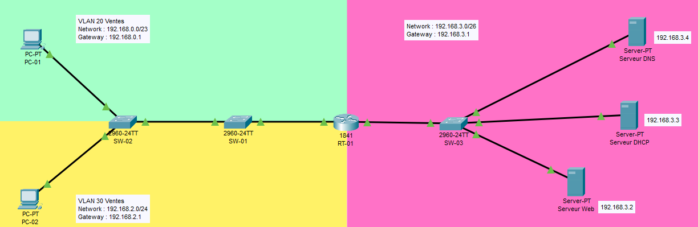

Réseau · Cisco Packet Tracer
Réseau d'entreprise avec VLAN et services réseau
Infrastructure réseau d'une petite entreprise organisée autour de deux services, Ventes et SAV, avec segmentation VLAN, routage inter-VLAN, attribution automatique des adresses IP par DHCP, résolution DNS interne et un serveur Web accessible en HTTP/HTTPS.
Télécharger le fichier Packet Tracer
Présentation du projet
Ce projet a été réalisé avec Cisco Packet Tracer. Il représente l'infrastructure réseau d'une petite entreprise organisée autour de deux services : Ventes et SAV.
La configuration comprend :
- un routeur Cisco 1841 ;
- trois commutateurs Cisco 2960-24TT ;
- deux postes clients ;
- un serveur DNS ;
- un serveur DHCP ;
- un serveur Web ;
- deux VLAN métiers ;
- des trunks entre les équipements réseau ;
- du routage inter-VLAN ;
- une attribution automatique des adresses IP par DHCP.
Topologie
Les postes clients sont connectés au switch SW-02. Ce switch est relié à SW-01 par un lien trunk. SW-01 est relié au routeur RT-01, qui assure le routage entre les VLAN.
Le routeur est également relié au switch SW-03, qui connecte les serveurs DNS, DHCP et Web.
Plan d'adressage
| Réseau | VLAN | Passerelle | Usage |
|---|---|---|---|
192.168.0.0/23 | 20 | 192.168.0.1 | Ventes |
192.168.2.0/24 | 30 | 192.168.2.1 | SAV |
192.168.3.0/26 | 1 | 192.168.3.1 | Serveurs |
| Équipement | Adresse IP |
|---|---|
| Serveur Web | 192.168.3.2 |
| Serveur DHCP | 192.168.3.3 |
| Serveur DNS | 192.168.3.4 |
VLAN configurés
| VLAN | Nom | Affectation |
|---|---|---|
| 20 | ventes | PC-01 |
| 30 | sav | PC-02 |
Configuration du routeur RT-01
hostname rt-01
!
ip cef
no ipv6 cef
!
interface FastEthernet0/0
no ip address
duplex auto
speed auto
!
interface FastEthernet0/0.20
encapsulation dot1Q 20
ip address 192.168.0.1 255.255.254.0
ip helper-address 192.168.3.3
!
interface FastEthernet0/0.30
encapsulation dot1Q 30
ip address 192.168.2.1 255.255.255.0
ip helper-address 192.168.3.3
!
interface FastEthernet0/1
ip address 192.168.3.1 255.255.255.192
duplex auto
speed auto
!
interface Vlan1
no ip address
shutdown
!
ip classless
ip flow-export version 9
Les sous-interfaces FastEthernet0/0.20 et FastEthernet0/0.30
permettent au routeur de communiquer avec les VLAN 20 et 30. La
commande ip helper-address permet de transmettre les
demandes DHCP au serveur 192.168.3.3.
Configuration du switch SW-01
hostname SW-01
!
vlan 20
name ventes
!
vlan 30
name sav
!
interface FastEthernet0/23
switchport mode trunk
!
interface FastEthernet0/24
switchport mode trunk
!
spanning-tree mode pvst
spanning-tree extend system-id- FastEthernet0/23 est reliée à SW-02.
- FastEthernet0/24 est reliée au routeur RT-01.
- Les deux interfaces sont configurées en mode trunk.
Configuration du switch SW-02
hostname SW-02
!
vlan 20
name ventes
!
vlan 30
name sav
!
interface FastEthernet0/1
switchport access vlan 20
switchport mode access
!
interface FastEthernet0/11
switchport access vlan 30
switchport mode access
!
interface FastEthernet0/24
switchport mode trunk
!
spanning-tree mode pvst
spanning-tree extend system-id- FastEthernet0/1 connecte PC-01 au VLAN 20.
- FastEthernet0/11 connecte PC-02 au VLAN 30.
- FastEthernet0/24 est le lien trunk vers SW-01.
Configuration du switch SW-03
hostname sw-03
!
spanning-tree mode pvst
spanning-tree extend system-idLes ports utilisés sont :
| Port | Équipement connecté |
|---|---|
FastEthernet0/1 | Serveur DNS |
FastEthernet0/2 | Serveur DHCP |
FastEthernet0/3 | Serveur Web |
FastEthernet0/24 | Routeur RT-01 |
Configuration DHCP
Le serveur DHCP utilise l'adresse 192.168.3.3.
Pool VLAN 20 — Ventes
| Nom du pool | VLAN 20 Ventes |
| Réseau | 192.168.0.0 |
| Masque | 255.255.254.0 |
| Passerelle | 192.168.0.1 |
| Plage d'adresses | 192.168.0.2 à 192.168.1.254 |
| Serveur DNS | 192.168.3.4 |
Pool VLAN 30 — SAV
| Nom du pool | VLAN 30 Sav |
| Réseau | 192.168.2.0 |
| Masque | 255.255.255.0 |
| Passerelle | 192.168.2.1 |
| Plage d'adresses | 192.168.2.2 à 192.168.2.254 |
| Serveur DNS | 192.168.3.4 |
Les postes clients sont configurés en DHCP. Les adresses observées
sont PC-01 : 192.168.0.2 et PC-02 : 192.168.2.2.
Configuration DNS
Le serveur DNS utilise l'adresse 192.168.3.4.
| Type | Nom | Adresse ou cible |
|---|---|---|
| A | srvweb.kaamelott.fr | 192.168.3.2 |
| CNAME | www.kaamelott.fr | srvweb.kaamelott.fr |
Cette configuration permet d'accéder au serveur Web avec le nom www.kaamelott.fr.
Configuration du serveur Web
IP address : 192.168.3.2
Subnet mask : 255.255.255.192
Default gateway : 192.168.3.1
DNS server : 192.168.3.4Les services Web configurés sont HTTP et HTTPS.
Services et technologies utilisés
| Technologie | Utilisation |
|---|---|
| VLAN | Séparation des services Ventes et SAV |
| Trunk 802.1Q | Transport de plusieurs VLAN entre les équipements |
| Routage inter-VLAN | Communication entre les réseaux utilisateurs |
| DHCP | Attribution automatique des adresses IP |
| DHCP relay | Transmission des demandes vers le serveur DHCP |
| DNS | Résolution des noms internes |
| HTTP/HTTPS | Accès au serveur Web |
| PVST | Gestion de la boucle réseau avec Spanning Tree |
Compétences mises en œuvre
- Configuration d'un routeur Cisco.
- Configuration de commutateurs Cisco Catalyst.
- Création et affectation de VLAN.
- Configuration de ports access et trunk.
- Mise en place du routage inter-VLAN.
- Configuration d'un relais DHCP.
- Configuration de services DNS et Web.
- Élaboration d'un plan d'adressage IPv4.
- Analyse et validation d'une topologie réseau dans Cisco Packet Tracer.
Commandes de vérification utiles
show vlan brief
show interfaces trunk
show ip interface brief
show ip route
show running-configLes commandes permettent de vérifier les VLAN, les trunks, l'état des interfaces, les routes et la configuration active des équipements.
Les mots de passe et secrets présents dans le fichier Packet Tracer ne sont pas reproduits dans ce document afin d'éviter de publier des informations sensibles dans un portfolio.